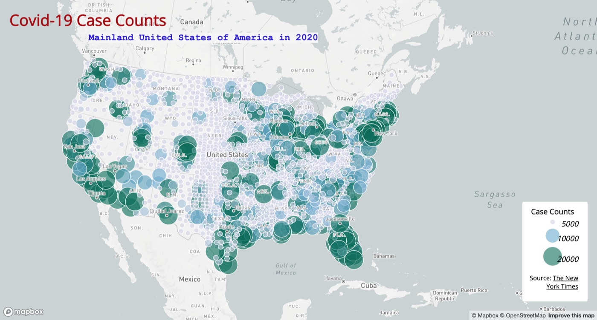
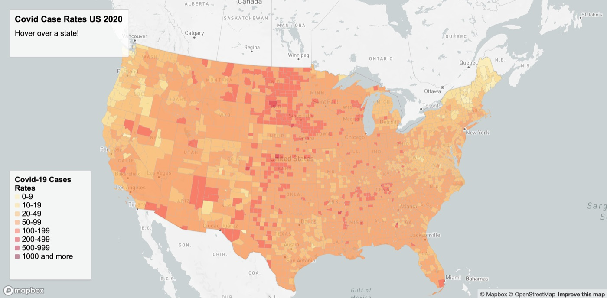
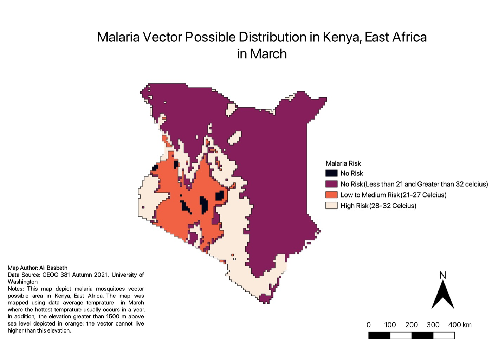

Ali Basbeth
Geospatial & LiDAR QA/QC Specialist · Spatial Data Analyst · MSIS Candidate
Bridging spatial data science, 3D LiDAR processing, and enterprise information systems to solve complex geospatial and infrastructure challenges.
About Me
Geospatial, LiDAR, and data professional with more than three years of experience analyzing, validating, and managing large-scale spatial datasets for utility and infrastructure projects. Experienced in LiDAR point-cloud QA/QC, utility vegetation management, 3D spatial analysis, GIS database management, geospatial automation, and client deliverable validation. Proven ability to design standardized QA/QC workflows and automate repetitive processes using Python, SQL, Excel macros, and MicroStation tools — reducing review time by roughly 50% and manual processing time by up to 80%.
Currently pursuing a Master of Science in Information Systems at the University of Washington Foster School of Business, building on a B.A. in Geography with a Data Science concentration. Technical background spans GIS, spatial databases, Python, SQL, PostgreSQL/PostGIS, ArcGIS Pro, QGIS, MicroStation/TerraSolid, PLS-CADD, Tableau, Power BI, Snowflake, and cloud-based data workflows. Interested in GIS engineering, data engineering, business intelligence, and technology-focused roles.
Technical Skills
Tech Stack
Featured Projects
Personal and coursework projects with public source code — each links to its repository and, where hosted, a live demo.


COVID-19 US Web Mapping Application
Interactive proportional-symbol and choropleth web maps of COVID-19 case counts and rates across US counties, built with Mapbox GL JS using NYT COVID-19 data and US Census boundary/population data.

Malaria Risk Mapping (QGIS)
Cartographic risk-mapping exercise built in QGIS, symbolizing and classifying malaria-related spatial data as a desktop GIS cartography project.
Desktop GIS project — source project file isn't in a public repo yet.
Custom Basemap & Map Tile Design
Four custom Mapbox Studio basemaps — a Puget Sound personality basemap, a WA broadband speed-test map, a combined thematic layer, and a Bellevue wetlands/parks awareness map — rendered with Mapbox GL JS.
Geo-Tagged Tweet Analysis
Python/Jupyter analysis comparing geo-tagged tweet activity across the contiguous US between morning and afternoon hours, with geographic distribution maps and word-cloud text analysis.
More projects are on the way — check github.com/LostGovernment for the full list in the meantime.
Professional Experience
Client and employer work below is proprietary, so these are case-study summaries rather than linked repos.
- QA/QC workflow design: engineered standardized QA/QC workflows and protocols across diverse geospatial datasets, achieving 100% QC accuracy and cutting review time by 50% across 250GB+ of weekly deliverables.
- Documentation and reporting: collaborated with team members to produce concise process documentation; managed QC reporting by summarizing key failures for project managers and tracking corrective actions through completion before delivery.
- Workflow automation: developed Python scripts and MicroStation macros to automate repetitive tasks, reduce manual effort, improve team efficiency, and support stable delivery across long-term client projects.
- Client deliverables and tracking: prepared client-ready deliverables and detailed QC reports, coordinated data deliveries through Google Cloud, and maintained project visibility through Monday boards.
- Training and mentorship: trained and mentored new hires in QA/QC workflows, strengthening onboarding and improving the consistency of technician QC results through ongoing guidance and validation.
- Managed parking operations and facility access control for 30+ events with up to 60,000+ attendees.
Education
Get In Touch
- basbethali@gmail.com
- +1 206-270-2314
- github.com/LostGovernment
- linkedin.com/in/ali-basbeth
- Bellevue, WA